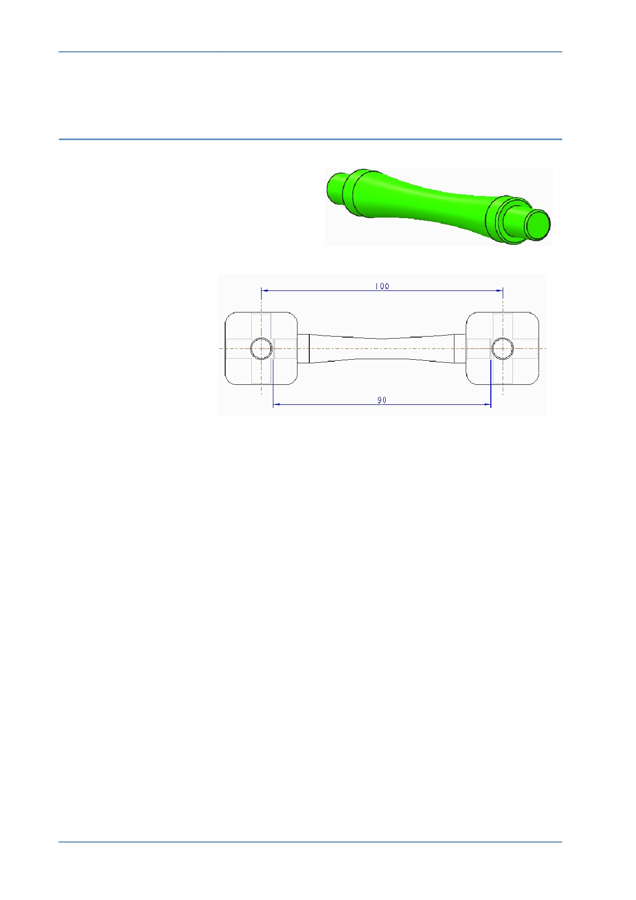

PTC Academic Program
Module 2
Procedure – Part modeling - Strut
Scenario
Connecting the corner cubes will be struts
with pegs at each end that fit into the holes
in the corner cubes.
The kit is based on
100 mm spacing
between cube centers.
A strut length of 90mm
provides clearance in the
center of the cubes.
After creating a new part, you will sketch a small circle at the center of the strut and
extrude this on both sides of the sketch to form the pegs. A larger circle, also located in
the center of the strut, is extruded on both sides to form the shouldered section. Finally,
a revolved arc cuts material from the strut to create the narrowed center section.
© 2012 PTC
Creo Parametric 2.0 Primer
Page 44